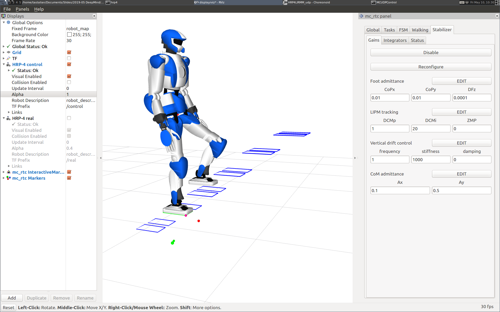

Abstract¶
The objective of this lecture is to understand the physics of balancing and how we can leverage them to design locomotion controllers.
Simulation¶

On Linux, formerly we could run the humanoid walking controller in a simulator with the following command. It is the software that run in the real-robot experiments at the Airbus Saint-Nazaire factory in February 2019.
$ xhost + # for X11 forwarding $ docker run -it --rm --user ayumi -e DISPLAY=${DISPLAY} \ -v /tmp/.X11-unix:/tmp/.X11-unix:rw \ stephanecaron/lipm_walking_controller \ lipm_walking --staircase
Update: Unfortunately the Docker Hub took down the image some time in 2025. Feel free to reach out if you are interested in running the image locally on your machine.
References¶
Modeling¶
Lectures¶
This lecture was given in the following courses:
- Fall 2025 class at École normale supérieure, Paris.
- Fall 2024 class at École normale supérieure, Paris.
- Fall 2024 class (snapshot) at Master MVA, Paris.
- Fall 2023 class at École normale supérieure, Paris.
Discussion ¶
Feel free to post a comment by e-mail using the form below. Your e-mail address will not be disclosed.